By
Yunjia Zeng
In
Project Part 2
Category
Predictive Models
In this analysis, the predictive models are constructed by the five most commonly used classification methods, in order to predict the price group of Airbnb listings. The methods are Gaussian Naive Bayes, Decision Tree, K Nearest Neighbor, Support Vector Machine, and Random Forest. The classification results are in the following subsections.
Preprocessing
In order to perform the classification methods on Airbnb dataset, preprocessing has been done to the dataset for dividing it into groups. The distribution of Airbnb prices is illustrated in the following figure.
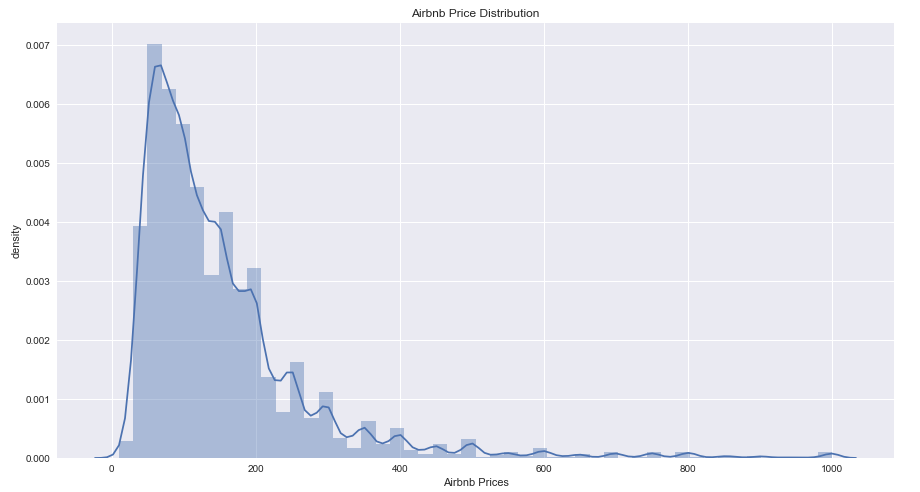
Based on the distribution, the prices are divided into three price groups, price group 0 with label A of price range from $0 to $200, price group 1 with label B of price range from $201 to $400, and price group 2 with label C of price range from $401 to the maximum price in listings. The distribution of the classes is illustrated in the following figure after grouping the prices
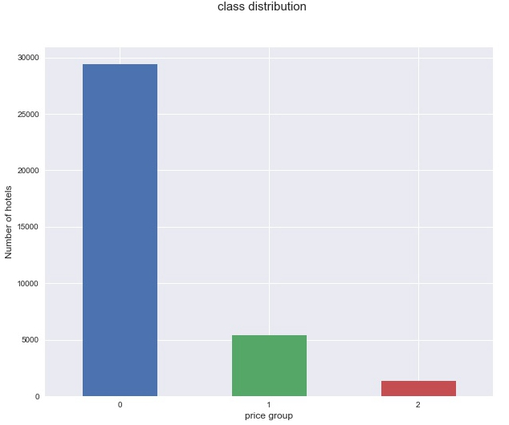
Decision Tree Predictive Model
The performance of Decision Tree classifier to the Airbnb data is fairly good, with an accuracy score of 0.8849. By the classification report in the following figure, Decision Tree classifier classifies all three classes good and performs excellently on classifying class 2, with corresponding label C.

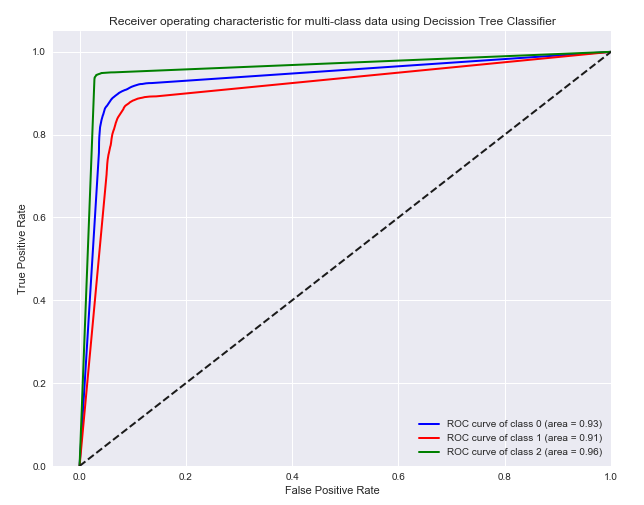
K Nearest Neighbor Predictive Model
KNN classifier performs well on Airbnb dataset, with an accuracy score of 0.8742. From the classification report in the figure below, it can be seen that the KNN classifier predicts good results for class 2, which is the price group C, with a 0.91 accuracy.
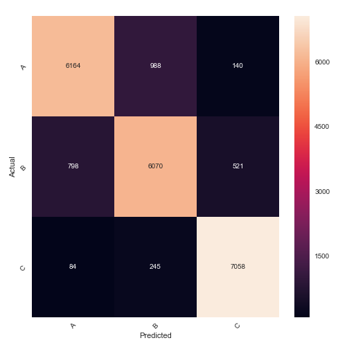
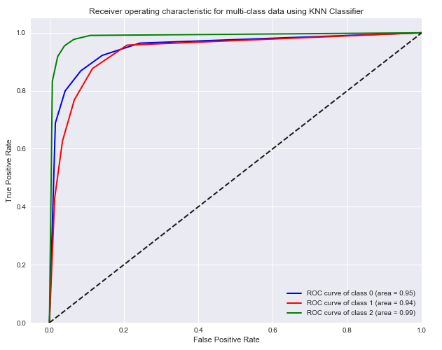
To the unknown records, KNN classifier works in a relatively expensive manner. Comparing with all five classification methods that were used, KNN classifier performs good but is relatively time consuming. The accuracy of KNN is a little bitter lower than Decision Tree, but much higher than the Support Vector Machine classifier in the next subsection.
Support Vector Machine Predictive Model
The SVM classifier performs ordinary on the Airbnb dataset, with an accuracy score of 0.7290. SVM classifies class 0 relatively good compare to class 1 and class 2. The results are illustrated in the following figure.
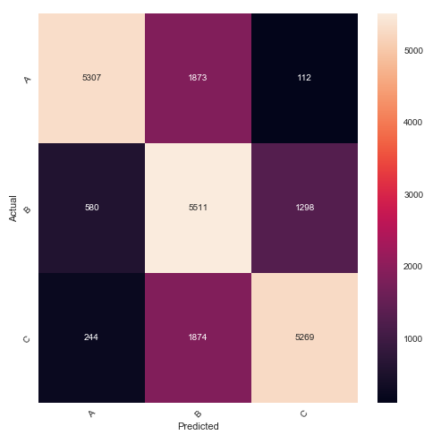
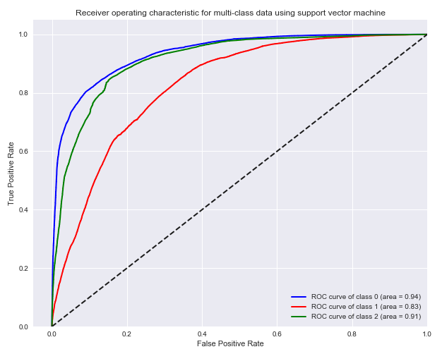
SVM works effectively in high dimensional spaces, especially when the dimension is greater than the number of samples. But if the features are far greater than samples, it performs poorly. Since SVM has no probability estimates, the probability must be computed using at least 5-fold cross-validation. This makes the training for SVM predictive model on Airbnb dataset extremely time consuming, and is far slower than all the other methods that are used.
Naive Bayes Predictive Model
The performance of the Gaussian Naive Bayes classifier on Airbnb price dataset is disappointing, with an accuracy score of 0.3524. From the classification report in the figure below it can be seen, Gaussian Naive Bayes successfully classifies class 0, which is the lower price range group in Airbnb dataset, with 0.81 precision; it poorly classifies class 1 and class 2, which are two higher price range Airbnb listings, with only 0.56 and 0.34 precisions.

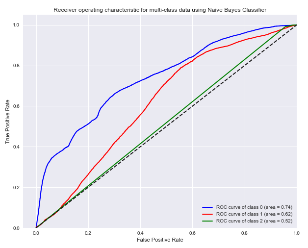
Random Forest Predictive Model
Random forest classifier performs the best on Airbnb dataset. The result is illustrated in the figure below.
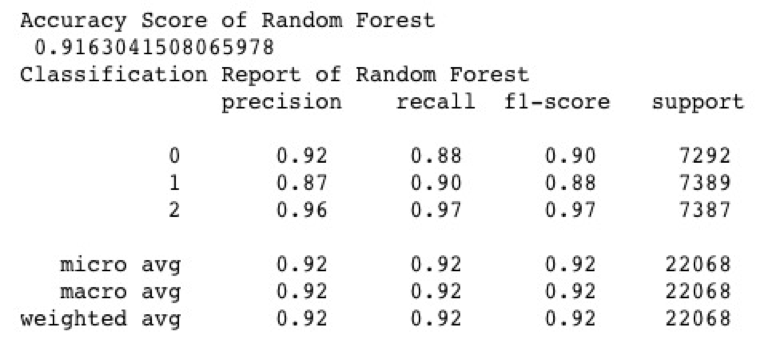
The Random Forest classifier grows multiple trees based on training data. It classifies a new record by offering a classification from each tree, then output the results based on the majority classification. Recall the Decision Tree methods, Random Forest creates a forest of decision trees and each of them votes on the classification, and the output of each testing sample is the class that wins most of the votes. Similar to SVM, Random Forest can handle large datasets with high dimensionality, but with much better training and testing time. It uses bootstrap sampling, also known as bagging, to the training data, which selected the whole training set with replacement. By averaging the various sub-samples of the training set, Random Forest improves the predictive accuracy and controls overfitting problem. Bagging reduces variance and it is very efficient with strong learner systems with low bias.

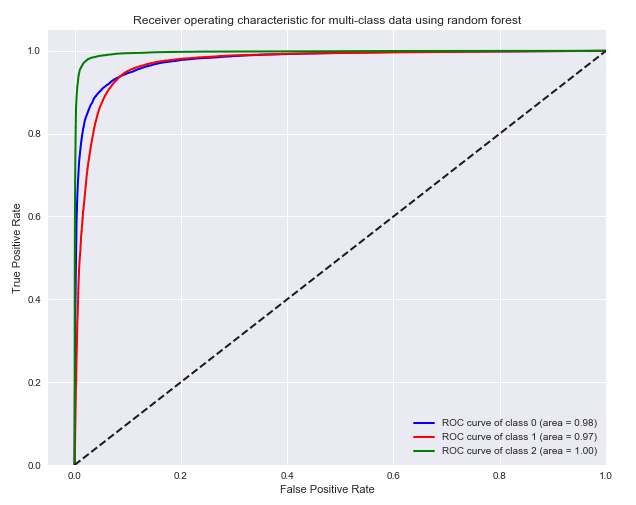
While training the predictive model, Random Forest classifier computes the feature importance scores for all features. The results in the following figure illustrate the most important features that contribute to the classification results. The room type of a listing mainly dominates the price, even more important than the hotel prices around in the same area. Another interesting important feature is accommodates, since it implies the area of a listing. By selecting important features, there can be simpler predictive model that performance the same but with less expensive training cost. The full table of feature importance and thresholds of accuracy are stored for possible further exploration in later part of this project.
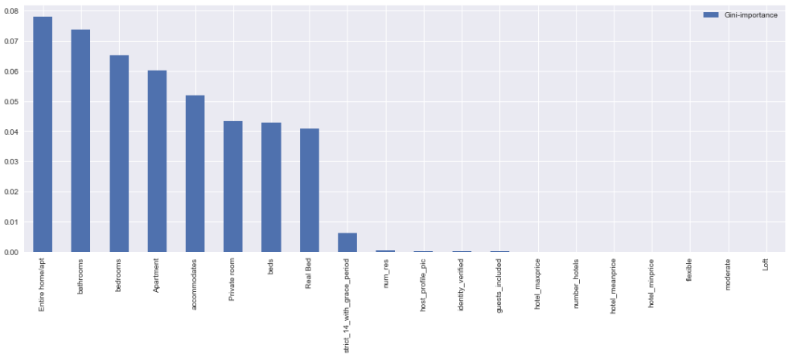